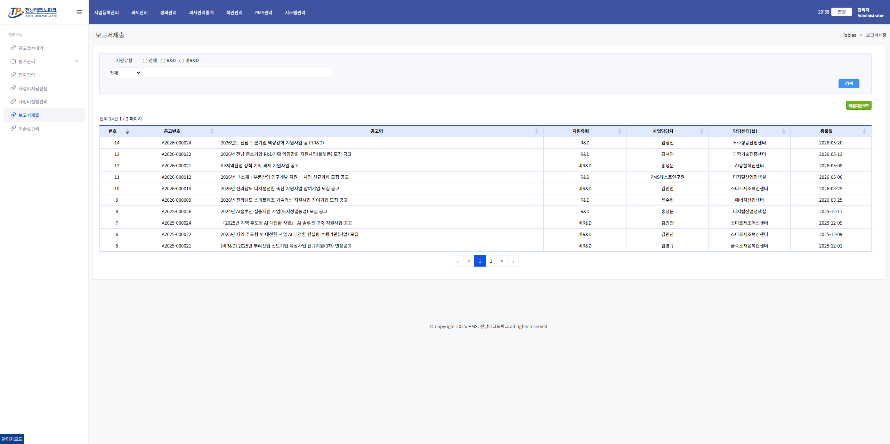
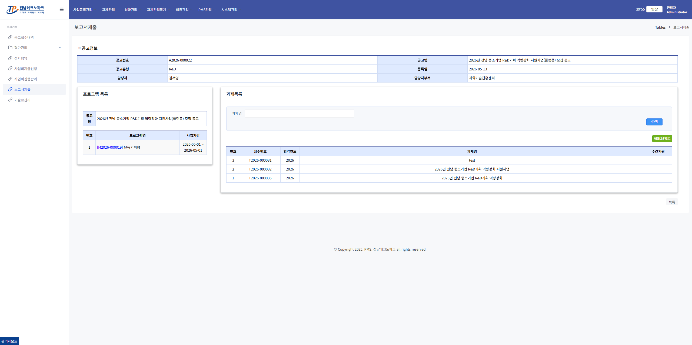
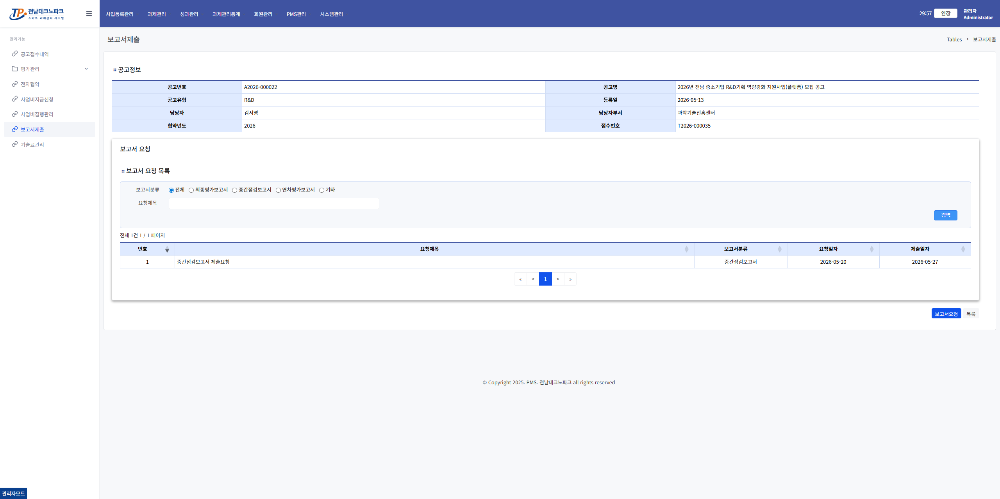
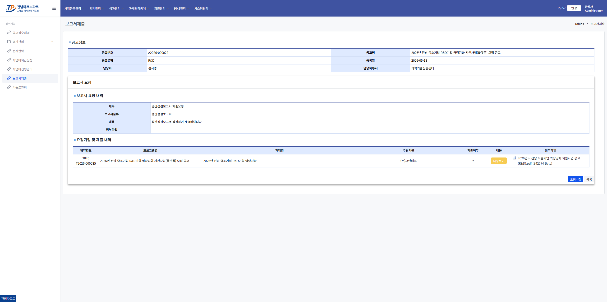
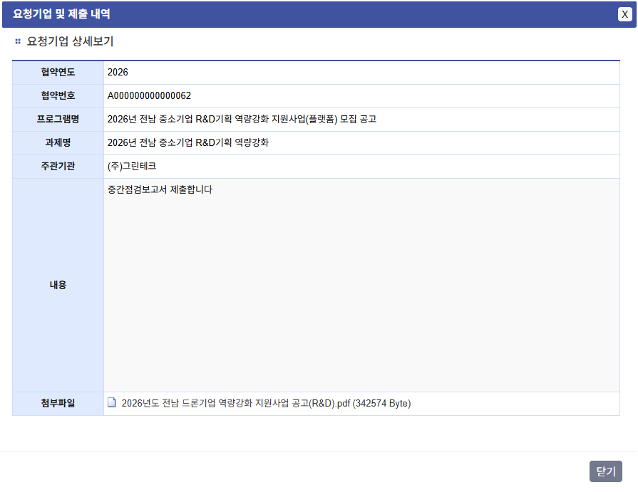

보고서 제출 확인 관리자
1. 보고서제출 공고 목록 진입
왼쪽 메뉴 「과제관리」 → 「보고서제출」 클릭 → 해당 공고 행 클릭

2. 프로그램 / 과제 목록 확인
보고서 제출 대상 프로그램 및 과제 목록을 확인하고 해당 과제 행을 클릭합니다.

3. 보고서 제출 목록 확인
기업별 보고서 제출 현황을 확인하고 해당 행을 클릭합니다.

4. 제출내역 확인
기업이 제출한 보고서 제출 내역을 확인합니다.

5. 제출 내용 상세 보기
제출 내역 행의 「내용보기」 클릭 → 기업이 제출한 보고서 상세 내용을 팝업으로 확인합니다.

💡 안내
보고서 제출 내용 확인 후 다음 단계인 중간/결과 평가 등록으로 진행합니다.